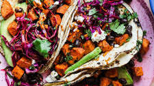

Sweet Potato Tacos

Description
Super fast and delicious tacos substituting sweet potatos in place of the meat.
- Corn Tortillas
- Sweet Potatos
- Cheese
- Black Beans
- Salsa
- Hot Sauce (optional)
Steps
- Cook sweet potatos 30-45 min in oven or campfire until soft
- Cook beans on stove when potatos have about 10 min left
- Warm the tortillas
- Place small amount of cheese on each tortilla
- Scoop sweet potato onto the cheese
- Add beans, salsa, and hot sauce of choice
- Serve hot